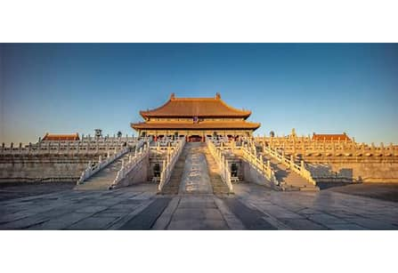
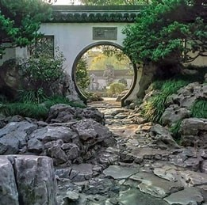
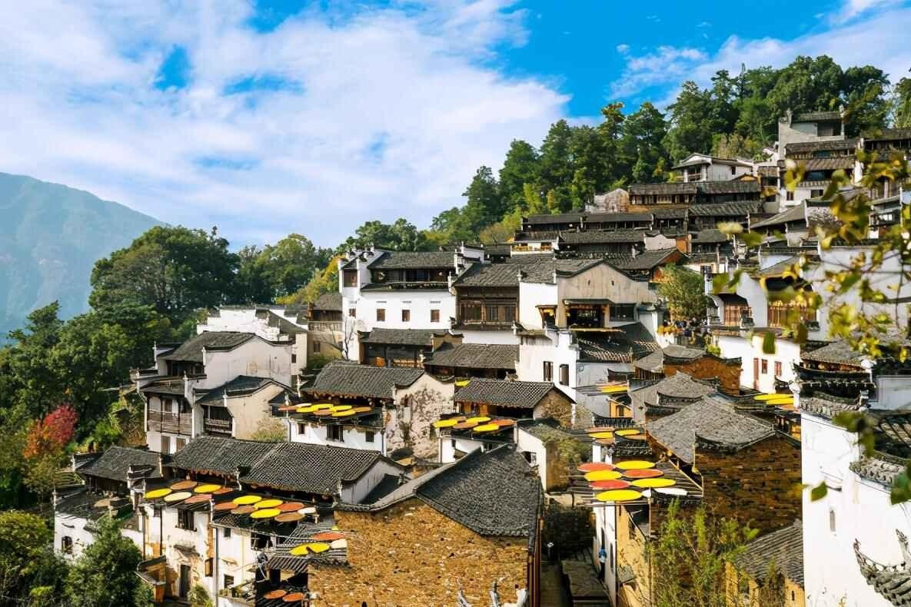
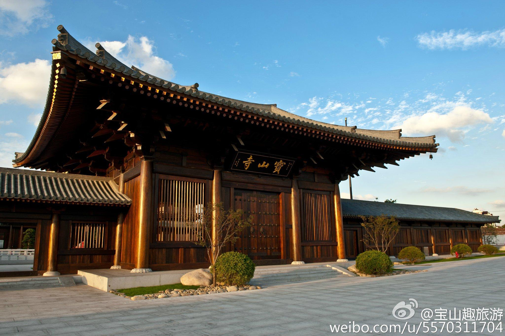
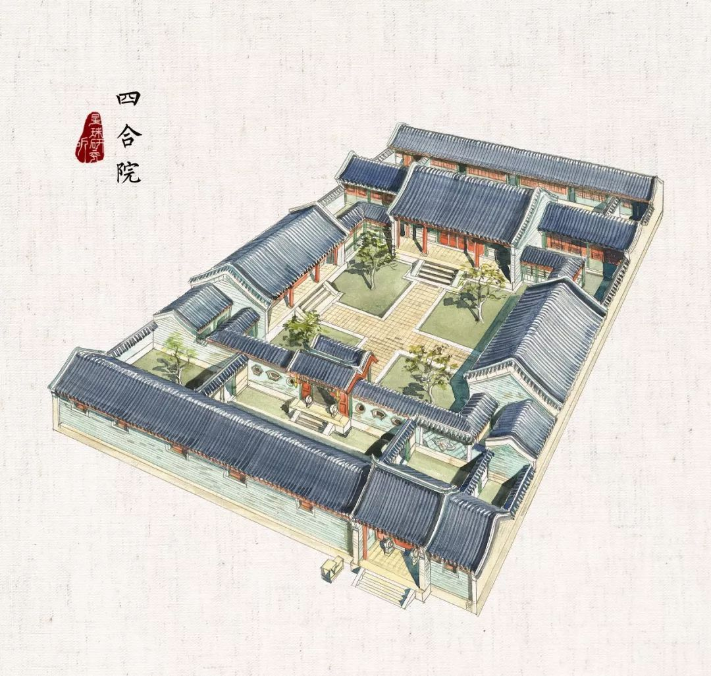
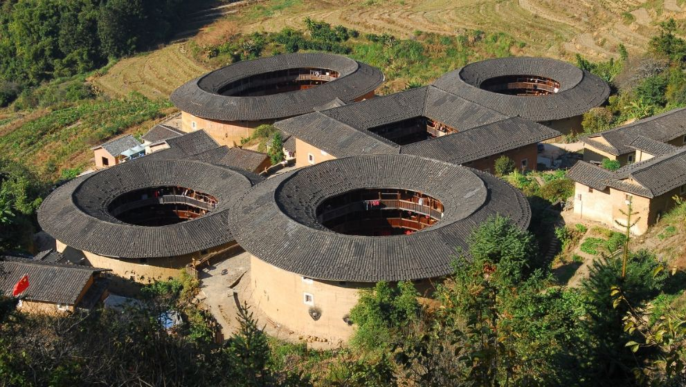

中国传统建筑艺术
千年匠心，木构之美，承载历史与文化的建筑瑰宝
建筑艺术简介
中国传统建筑是中华民族五千年文明的重要组成部分，以木构架为主体，讲究对称布局、层次分明，体现了中国古代劳动人民的智慧和匠心。其建筑特色包括屋顶的翘角飞檐、斗拱结构、庭院格局等，不仅具有实用功能，更蕴含着深厚的文化内涵和哲学思想。
中国传统建筑根据功能可分为宫殿建筑、宗教建筑、园林建筑、民居建筑等多种类型，每种类型都有其独特的风格和特点，代表着中国古代建筑艺术的不同面貌。
传统建筑类型

宫殿建筑
中国古代帝王居住和处理政务的场所，如北京故宫、承德避暑山庄等，建筑宏伟壮观，等级森严，象征皇权。

园林建筑
融合了建筑、山水、植物等元素的人造景观，如苏州园林、颐和园等，讲究"虽由人作，宛自天开"。

民居建筑
各地民间住宅建筑，如北方四合院、安徽徽派建筑、福建土楼等，体现地域文化特色和适应性。

宗教建筑
包括佛教寺庙、道教宫观、伊斯兰清真寺等，如敦煌莫高窟、山西悬空寺、北京天坛等，体现宗教文化。
特色建筑赏析
北京四合院

四合院是北京最具代表性的传统民居建筑，由东、西、南、北四面房屋围合成方形院落，布局严谨，体现了中国传统"礼制"文化和伦理观念。
建筑特点：
- 严格的中轴对称布局，反映等级观念
- 灰砖灰瓦，朱红门窗，色彩对比鲜明
- 合院式结构，既保证私密性又有良好通风采光
- 建筑布局符合"前堂后寝，左男右女"的居住原则
福建土楼
福建土楼是世界文化遗产，主要分布在福建省西南部山区，是汉族客家人和闽南人创造的大型夯土民居建筑群，具有防御、居住、宗族聚居等多重功能。
建筑特点：
- 圆形或方形的封闭式建筑，外墙厚实坚固
- 以土、木、石为主要建筑材料，就地取材
- 内部多层结构，环绕中心天井布局
- 具有良好的防御功能和生态环保特性
